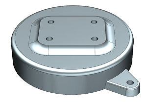

创建一个包含所有边倒圆的特征组。
打开 des13_feature_group_1。

选择格式→组→特征分组。
在特征分组对话框的特征组名称输入框中键入全部边倒圆。
在部件中的特征列表中，双击三个边倒圆特征以将它们添加到组中的特征列表中。
清除嵌入特征组成员复选框。
点击确定。
使用部件导航器来查看特征组。
边倒圆将被列在模型历史记录节点与特征组中，如果特征被嵌入到特征组中，则不能将再将它们添加到其它特征组中。